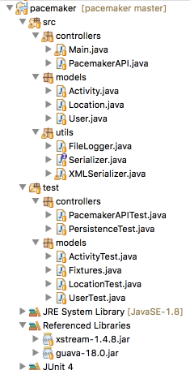

Extend the pacemaker project to include tests for the persistence mechanisms.
This lab assumes you have completed the previous lab - this is the complete archive here:
Create a new test specifically for persistence (includeing all the neccessary imports here for convenience):
package models;
import controllers.PacemakerAPI;
import static org.junit.Assert.*;
import java.io.File;
import java.util.Collection;
import models.Activity;
import models.Location;
import models.User;
import org.junit.Test;
import utils.Serializer;
import utils.XMLSerializer;
import controllers.PacemakerAPI;
import static models.Fixtures.users;
import static models.Fixtures.activities;
import static models.Fixtures.locations;
public class PersistenceTest
{
PacemakerAPI pacemaker;
}Before writing a test, we introduce a utility method which we will user to create a dataset in pacemakerAPI. This is not a test, but will be called from a test.
void populate (PacemakerAPI pacemaker)
{
for (User user : users)
{
pacemaker.createUser(user.firstName, user.lastName, user.email, user.password);
}
User user1 = pacemaker.getUserByEmail(users[0].email);
Activity activity = pacemaker.createActivity(user1.id, activities[0].type, activities[0].location, activities[0].distance);
pacemaker.createActivity(user1.id, activities[1].type, activities[1].location, activities[1].distance);
User user2 = pacemaker.getUserByEmail(users[1].email);
pacemaker.createActivity(user2.id, activities[2].type, activities[2].location, activities[2].distance);
pacemaker.createActivity(user2.id, activities[3].type, activities[3].location, activities[3].distance);
for (Location location : locations)
{
pacemaker.addLocation(activity.id, location.latitude, location.longitude);
}
}It creates some users + activities, and then adds a route to one of the activities. We can write a test to see if this is functioning generally as expected:
@Test
public void testPopulate()
{
pacemaker = new PacemakerAPI(null);
assertEquals(0, pacemaker.getUsers().size());
populate (pacemaker);
assertEquals(users.length, pacemaker.getUsers().size());
assertEquals(2, pacemaker.getUserByEmail(users[0].email).activities.size());
assertEquals(2, pacemaker.getUserByEmail(users[1].email).activities.size());
Long activityID = pacemaker.getUserByEmail(users[0].email).activities.keySet().iterator().next();
assertEquals(locations.length, pacemaker.getActivity(activityID).route.size());
}This should pass. However, we are not using the serializer yet.
Before writing the serializer test, we need a simple file deleting utility:
void deleteFile(String fileName)
{
File datastore = new File ("testdatastore.xml");
if (datastore.exists())
{
datastore.delete();
}
}Now we can write a new test specifically to see if an object model is serialized - and restored - successfully.
@Test
public void testXMLSerializer() throws Exception
{
String datastoreFile = "testdatastore.xml";
deleteFile (datastoreFile);
Serializer serializer = new XMLSerializer(new File (datastoreFile));
pacemaker = new PacemakerAPI(serializer);
populate(pacemaker);
pacemaker.store();
PacemakerAPI pacemaker2 = new PacemakerAPI(serializer);
pacemaker2.load();
assertEquals (pacemaker.getUsers().size(), pacemaker2.getUsers().size());
for (User user : pacemaker.getUsers())
{
assertTrue (pacemaker2.getUsers().contains(user));
}
deleteFile ("testdatastore.xml");
}This is a complex test, involving the creating of two pacemakerAPI objects. One is populated with complete object graph and serialized. The second loads this graph.
As both are held in memory, we can run through them in the final loop to test for equivalence.
Try this now and the tests should pass.
I
In order to verify that the full object graph is being compared, place breakpoints in the equals() method in User, Activity and Location, and run the test again in the debugger.
Do you notice anything unusual?
Only the User.equals() method is being triggered, the activities or locations equals are never called. This is because the equals method in User is incomplete. Here is a revision, which includes the extra method call:
@Override
public boolean equals(final Object obj)
{
if (obj instanceof User)
{
final User other = (User) obj;
return Objects.equal(firstName, other.firstName)
&& Objects.equal(lastName, other.lastName)
&& Objects.equal(email, other.email)
&& Objects.equal(password, other.password)
&& Objects.equal(activities, other.activities);
}
else
{
return false;
}
}This test should still run successfully, but perform a more effective 'deep compare' of the full object graph.
Finally, reflect again on this 'populate' method:
void populate (PacemakerAPI pacemaker)
{
for (User user : users)
{
pacemaker.createUser(user.firstName, user.lastName, user.email, user.password);
}
User user1 = pacemaker.getUserByEmail(users[0].email);
Activity activity = pacemaker.createActivity(user1.id, activities[0].type, activities[0].location, activities[0].distance);
pacemaker.createActivity(user1.id, activities[1].type, activities[1].location, activities[1].distance);
User user2 = pacemaker.getUserByEmail(users[1].email);
pacemaker.createActivity(user2.id, activities[2].type, activities[2].location, activities[2].distance);
pacemaker.createActivity(user2.id, activities[3].type, activities[3].location, activities[3].distance);
for (Location location : locations)
{
pacemaker.addLocation(activity.id, location.latitude, location.longitude);
}
}This is very clumsy and poorly abstracted code. Are there alternative approaches?
Currently the app is structured like this in eclipse:
The test classes should be adjusted to better align with the packages they are testing. Refactor the project to look like this:

It should be possible to do this just using drag and drop within the package explorer.
Archive of the completed lab:
For many uses, XML has largely been replaced with JSON:
Which offers some considerable benefits as a simple representation of data structures. The xtream library supports JSON:
You will need these additional jar files to use incorporate JSON into the existing pacemaker project:
Design a new class called JSONSerializer - whose task is to persist the pacemaker models to JSON instead of XML.
Note - you already have built a useful test for this - so the implementation will have immediate access to a regression test to see if it works successfully or not.